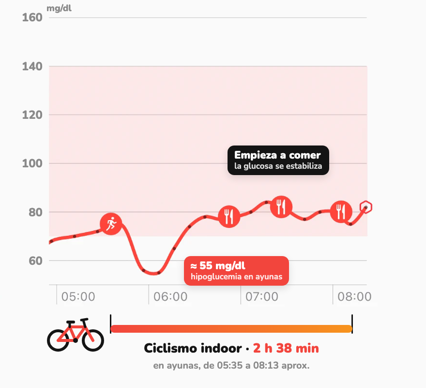

Mitos con datos
¿Entrenar en ayunas? Mira tu glucosa.
Una Viber pedaleó en ayunas y bajó a 55 mg/dl.
Desliza →
Hacemos visible lo invisible
Una Viber pedaleó en ayunas y bajó a 55 mg/dl.
Desliza →

Curva real de una Viber, en ayunas. Cada cuerpo responde a su manera.
| Carbohidratos | |
|---|---|
| ✅ Mejor | 25 g cada 30 min |
| ❌ Peor | 50 g cada 50-60 min |
Si tienes diabetes o tomas medicación que baja la glucosa, consulta con tu equipo sanitario antes de entrenar en ayunas.
glucovibes.com